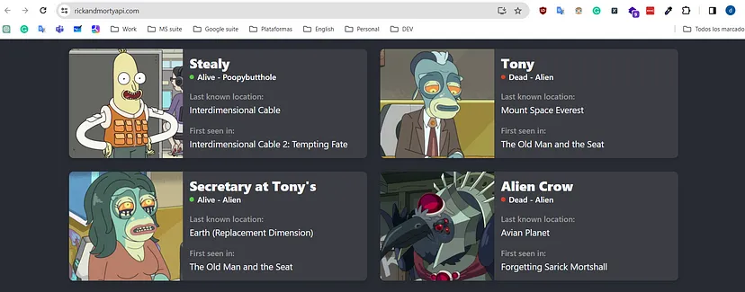
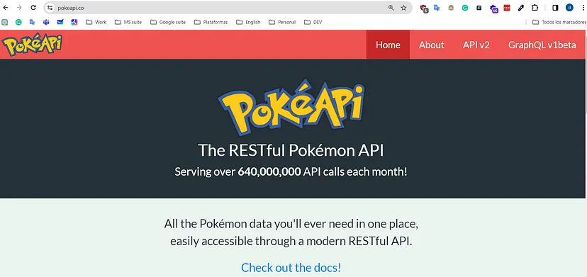
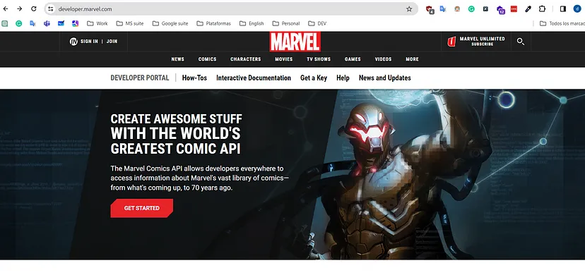
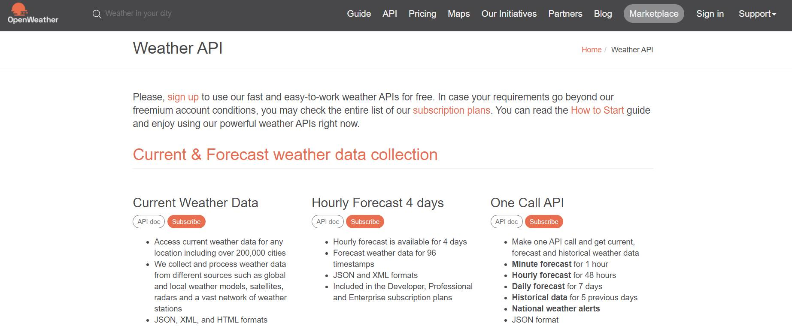
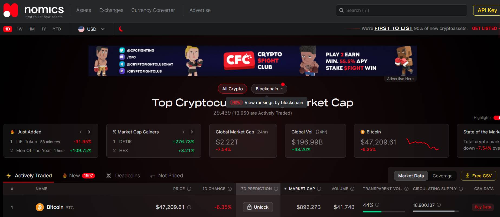
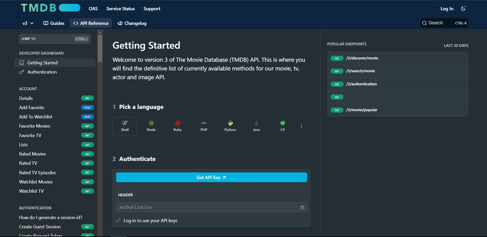
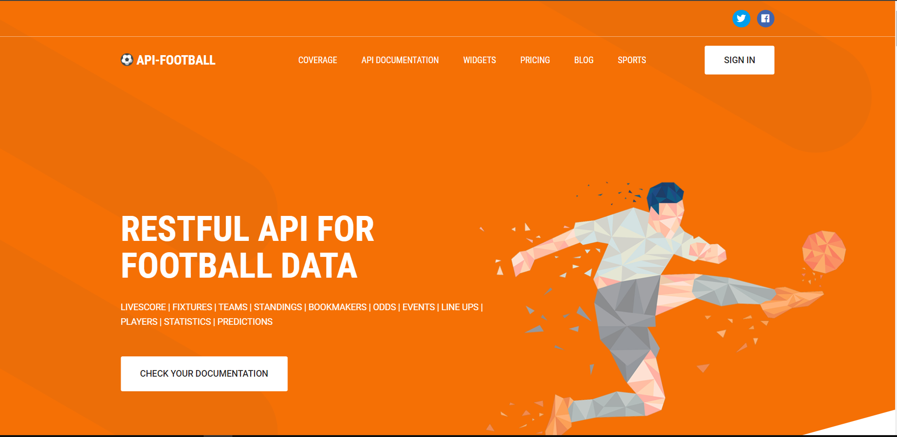

3. Cloud Computing y Programación
6. Herramientas para Practica
Explorar el mundo de las API's es una excelente manera de poner en práctica tus habilidades de programación, aprender nuevas tecnologías y desarrollar proyectos interesantes. A continuación, te presento algunos recursos con API's para practicar y aprender, desde las más básicas hasta las más complejas:
The Rick and Morty API

The Rick and Morty API es una API que proporciona información sobre la serie de televisión animada “Rick and Morty”. Esta API ofrece datos detallados sobre personajes, episodios y ubicaciones dentro del universo de la serie.
PokéAPI

PokeAPI es una API que proporciona información sobre Pokémon. Esta API es una excelente fuente de datos para desarrolladores que deseen crear aplicaciones, juegos, o simplemente explorar información detallada sobre los Pokémon.
Marvel API

Esta API es muy popular entre los desarrolladores. Para utilizarla, solo necesitas registrarte en developer.marvel.com, y una vez hecho esto, podrás acceder a todo el contenido de Marvel, incluyendo información sobre personajes, cómics, películas, videojuegos y mucho más.
NASA Open API
NASA Open API proporciona el acceso a datos relacionados con el espacio, las misiones espaciales y otros aspectos fascinantes del universo.
Open Weather API

Open Weather API proporciona información meteorológica actualizada y pronósticos para diferentes ubicaciones en todo el mundo.
https://openweathermap.org/api

Si lo que necesitas hacer es económico, entonces entra a nomics.com y podrás consumir los datos de las principales criptomonedas del mundo. Es decir, sus precios, cambios y predicciones. Con esta información podrás crear aplicaciones móviles, bots comerciales, gráficos y mucho más. Solo debes generar tu clave API gratis.
The Movie Database (TMDB) API
The Movie Database (TMDB) API te brinda acceso a una vasta colección de datos sobre películas, series de televisión, actores, directores y más, todo en un formato estructurado y fácil de usar.
https://developer.themoviedb.org/reference/intro/getting-started
API Football
API Football te abre las puertas a un universo de datos y estadísticas sobre fútbol en tiempo real, permitiéndote crear aplicaciones, sitios web y proyectos innovadores para los fanáticos de este deporte en todo el mundo.
Obra publicada con Licencia Creative Commons Reconocimiento Compartir igual 4.0